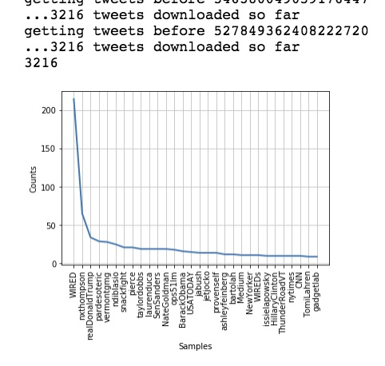
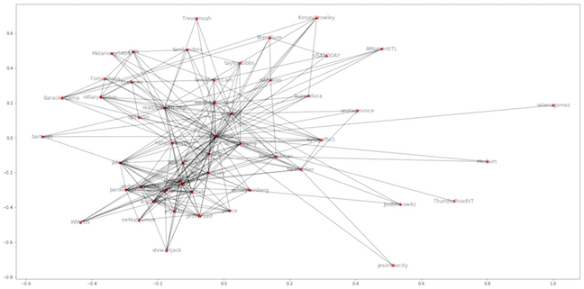

In this blog I will be drawing some network connectivity graphs by first collecting user mentions from Twitter then turning them into nodes and graphing using https://networkx.github.io/ . First I will be getting the tweets from my first blog first post
to and then filter out the top 20 mentions of other users then go to their account and grab their top 20 mentions of other users and so on. Then I graph these connections and look at the overall picture. In network visualization you can see how interconnected and “central” a user is as an indicator of the person’s social influence. There are lots of other types of things you can infer from network graphs for instance graphing “fake” spam Twitter accounts controlled by the same entity usually shows little interconnectivity. Trends emerge for people that use their account for promoting business, personal use, marketing porn sites and many more.
Once you run this you will have a list of top mentions and their frequency. The function also makes this graph: 
Now you just have to make another function to get the same thing for every user on this list.
We have taken ~40k tweets and created a concise list of who is talking about who in this network that is centered around one user. Pretty crazy right? Now we use NetworkX to graph the data.

For the next Blog we will be looking at t-SNE clustering of Tweets!